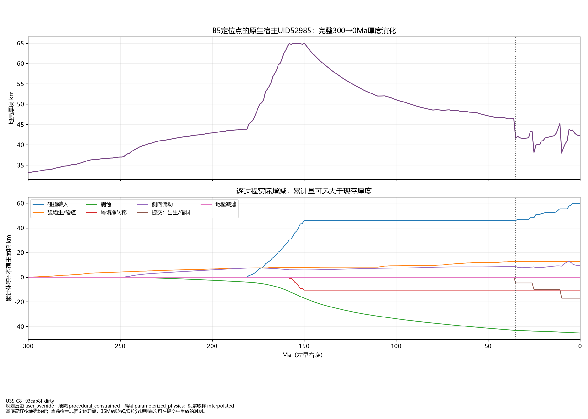
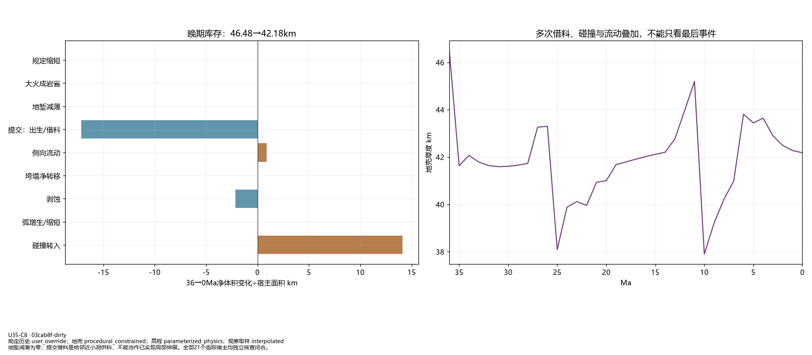
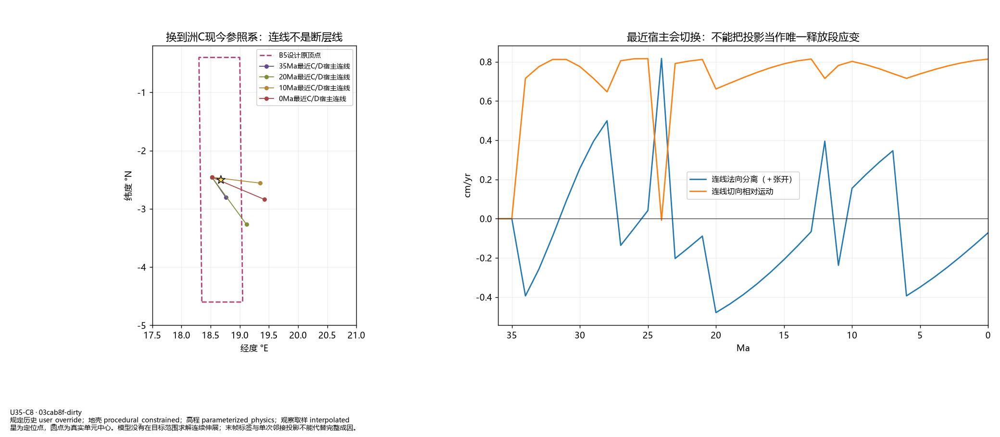
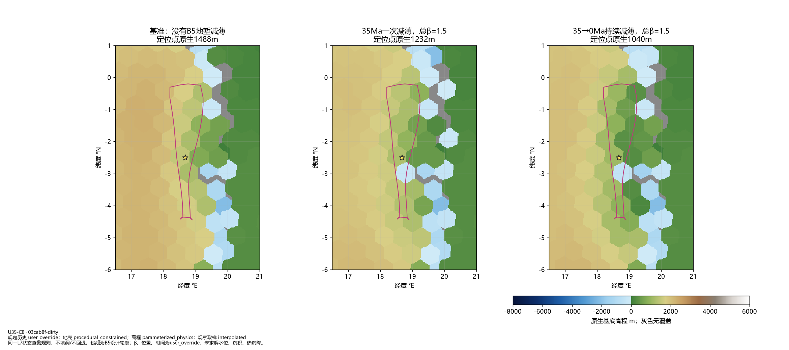
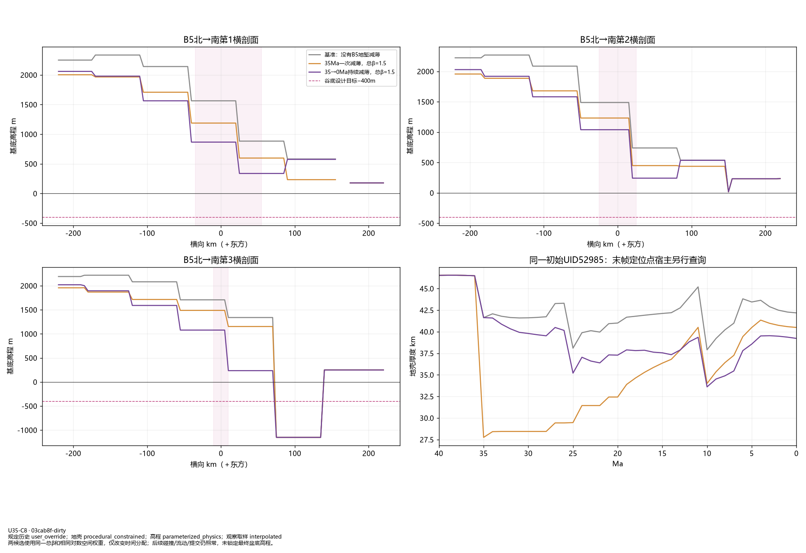
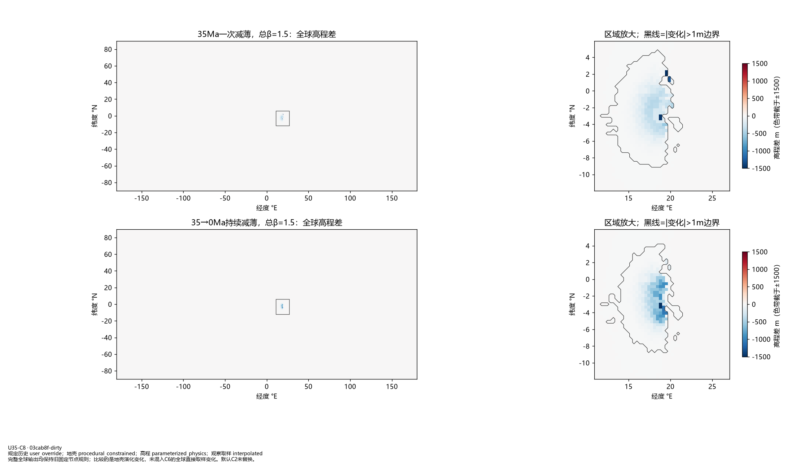

U35-C8：B5演化收支与伸展候选
相同总β=1.5，位置/时间/倍率为设计处方；没有锁定盆底高程，没有采用候选或改变默认世界。负基底高程不代表水文已求解。
51_B5_material_history.png

52_B5_late_budget.png

53_B5_motion_and_location.png

54_B5_extension_candidates.png

55_B5_profiles_and_persistence.png

56_B5_global_cost.png

一次减薄标准图组 · 持续减薄标准图组